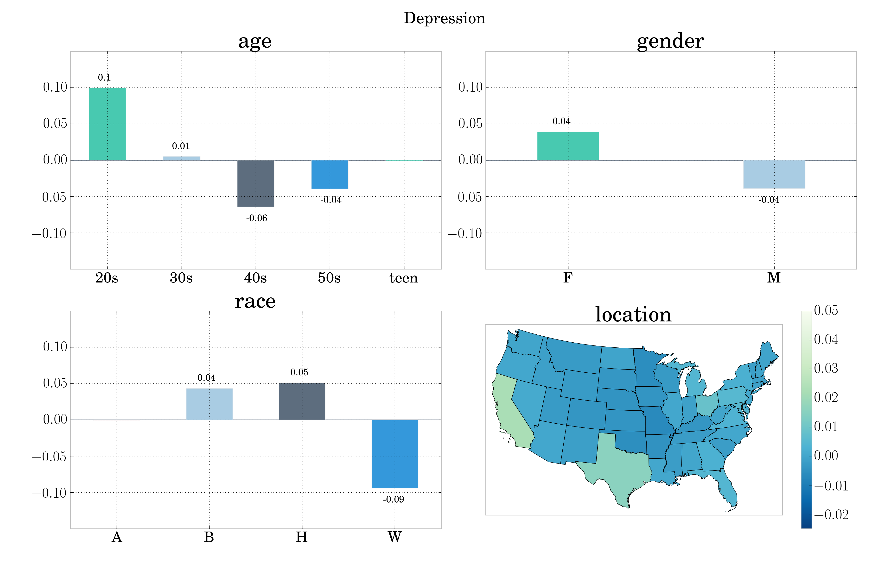

I am a postdoctoral fellow working with Professor Mark Dredze at the Center for Language and Speech Processing at Johns Hopkins University.
Research
In my research I develop NLP and machine learning models for social media analysis. I am particularly interested in methods to build these models for low-resource domains and languages. I am also interested in work on using machine learning and data science for applications with a positive personal, social or humanitarian impact. My work has been driven by real-world problems with an emphasis on applications for the social sciences and public health sciences.
Social Sciences
I developed Twitter sentiment analysis models for journalists to gauge public reactions to newsworthy events. I also developed models for a political opinion mining system to track the popularity and attitudes about Portuguese politicians on social media, over time. The indicators produced by the system were made publicly available and have been used by political scientists such as Pedro Magalhães to conduct analyses about public opinion.

I developed unsupervised neural representation learning models that can capture latent personal traits of social media users from their prior posting history. I used the resulting representations to improve sarcasm detection models.
Public Health
I leveraged the same user representation to build classifiers to predict if a user is affected by a mental illness, such as depression or PTSD, given their Twitter data.

Currently, I am applying these models to build digital epidemiology systems to support real-time and longitudinal large-scale public health studies from social media data. My hope is that this work will enable more responsive and deliberate public health interventions; foster a better understanding of mental illnesses and how they affect different segments of the population; improve behavioral medicine practices; and ultimately bring about a platform for precision public health.

Keywords
| Social Media Analysis | Natural Language Processing | Machine Learning |
| Neural Networks | Deep Learning | Low-resource Learning |
| Computational Social Sciences | Mental-health Applications | Digital Epidemiology |
Industry
- Research Scientist @ Good Analytics
- Research Scientist @ Qntfy
Education
-
PhD in Information Systems and Computer Engineering @ Instituto Superior Técnico, Universidade de Lisboa
Thesis: Agile Social Media Analysis with Neural Networks
-
Master in Software Engineering @ Faculdade de Ciências, Universidade de Lisboa
Thesis: Desenvolvimento e Reengenharia de Aplicações Web de Suporte ao Negócio e Integração com Sistemas de Business Intelligence -
Licenciate in Computer Science @ Faculdade de Ciências, Universidade de Lisboa